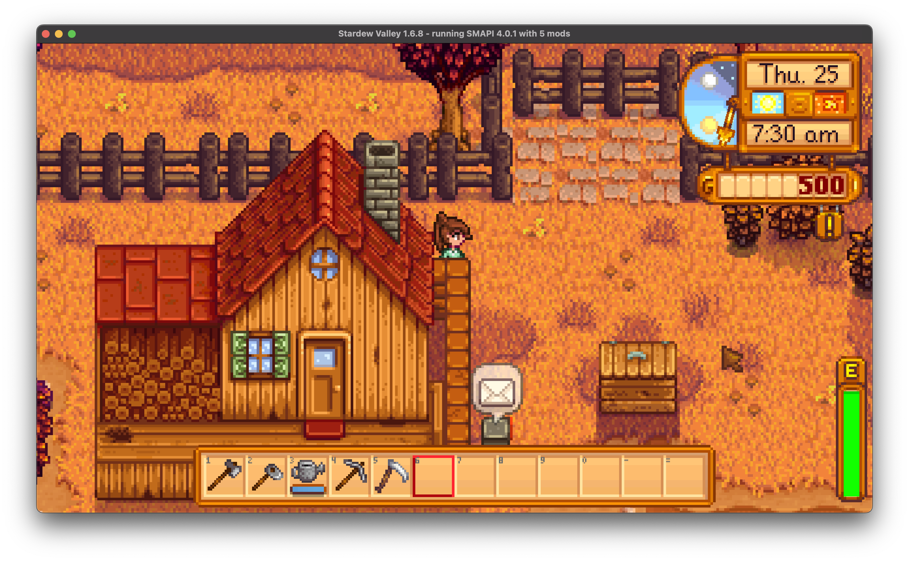

Mods By Caleb
Disable Building Fade

A mod for Stardew Valley that disables the buildings becoming transperent when the player walks behind them. If GenericModConfigMenu is installed, you'll get a toggle in the Mod Settings to turn transparency on or off.
Idea from the Reddit thread here